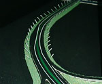

呂清夫 撰文

有人說，變化是人生的香水，公共藝術何嘗不是？所謂「以不變應萬變」可能很不適用於公共藝術，台灣的公共藝術需要某種多元性，因為台灣的社會本來就是多元的，其公共藝術設置的基地也是相當多樣的。 這次陳健的「洗塵」一作之所以出線，主要的原因可能是它真正為基地而做，換個基地，同一件作品可能就沒有用武之地了。因為這件作品牽涉到基地的特殊長度、觀眾的快速移動等條件，其能充分滿足此條件的作品就無法另作他用了。自然，這件作品本身的簡潔清新、科技應用也使它更具競爭力。這件作品在初看之下，可以說貌不驚人，甚至有點單調，比起其他作品的變化多端、顏色豐富來看，它顯得相當簡單、樸素，但也相當純粹、清晰，有點極簡派的味道。放在高速公路來看，它應該比起視覺繁複之作可能更為恰當，而公共藝術最重要的是要為基地量身定做才好。 我們不能用畫廊的情境來想像高速公路上的藝術品，我們可以這樣推想，在高速公路上，由於速度很快，人們要靜靜欣賞路上的藝術品幾乎不可能，同時即使可能欣賞，也不適合欣賞有待靜觀的作品，可能更適合體會一種製造「過程氣氛」的藝術。「洗塵」一作就是有這樣的特質，目前的設計特別是在入夜以後的氣氛營造，可以說相當清新脫俗，四十二支光纖玻璃光柱有計畫地排列於高速公路的兩旁，讓踏進國門的旅客感受優美的節奏感，其一端還有噴水裝置，讓旅客感受到所謂的「洗塵」之感。 只是這件作品也並非毫無精益求精的空間，譬如白天的效果可能還要加強，這樣才能使它看起來更具藝術性﹔光柱的排列方式還可以推敲，使它們不致看起來像戰場的鹿柴。至於材質方面，須要方便於維護，使之不至於輕易受到大大小小的破壞，影響作品的美感。 這次參選的其他公開徵件作品也都十分用心，不但結構繁複，色彩也相當考究，如「國門印象」（董振平）、「兩個地平線」（王為河）等作品屬之，但是有些作品的量體也不小，如「國門意象」（李寶龍）、「熱情」（田編武）等是。有的作品一度還使評審委員推為首獎之作，因為若從靜觀的角度確實不錯，但若進一步看看高速公路的情境，便只好割愛了。 在邀請比件方面，藝術家們也都卯足全勁去創作，只是有的作品可能量體過大，有的作品可能不夠量身定做，有的可能不適合高速公路的特殊情境，以致選不到主辦單位想要的作品。其中來自美國的Andrew Ginzel之作品可以說有點極簡派的味道，量體也不大，那就是在基地上插遍國旗作為作品，這件作品如果是暫時性的裝置之作可能不錯，但是作為常設性的作品就可能不無問題了，因為太大的國旗維護不易，碰到颱風更是麻煩，同時國人對國旗本身的感覺可能跟美國人對國旗的感情也不完全一樣。 來自日本的Hiroshi Yoshimizu作品是根據「台北」兩個漢字來設計成門狀，原意可能想作成凱旋門一般。作者本來擬用龍的造形來設計，但因想到那是中原的東西，跟現階段的台灣文化未必完全契合，所以改用台北兩字作為造形的依據，但文字的發想本來就難以處理得很好，也因此，可能反而使他綁手綁腳，終至做出超大的量體，連過往的汽車都可能感到相當的壓迫感，這跟作者過去那種輕快的作品大異其趣，但整個看來，在「國門印象」的營造上言，還是可以說達到某種程度的要求。 從人類造形的發展史來看，最少有量塊期、透空期、平衡期、動態期等的分期，可謂應有盡有，就像金字塔以後，會有艾菲爾鐵塔、第三國際紀念塔、修佛光塔等的出現一般，可謂多采多姿。但是看看我們的公共藝術，卻往往都還停留在量塊期，所以常見的自然是傳統的雕塑或類似的造形，其中雖然也會有極佳的作品出現，然在多元化的社會中，太過「一言堂」的事物總不免讓人感到疲勞，這就如同公共藝術的風格一樣，如果到處出現的都是抽象的作品，那就不容易滿足多數人的趣味，因為有人可能要看寫實的，也有人可能要看幽默的的作品。同樣的，在公共藝術的範疇中，除了常見的雕塑之外，街頭傢具、噴泉水景、垂吊造形、空間造形也都是大家所期待的東西，因之，如有能回應大家期望的作品，便可能更容易受到青睞，這次公開徵件中的「洗塵」也有一部份是因為它近乎空造形而出線的。 但願我們的公共藝術能夠多從風格、範疇等各種角度來求其多樣性，同時台灣的基地環境本來就頗富於多元性，在因地制宜、量身定做的前提下，作品的風貌也自然會要求多樣性，多樣性可能是台灣公共藝術成功的要項，也可能是興辦機關要求的目標，公共藝術不需要處「變」不驚！